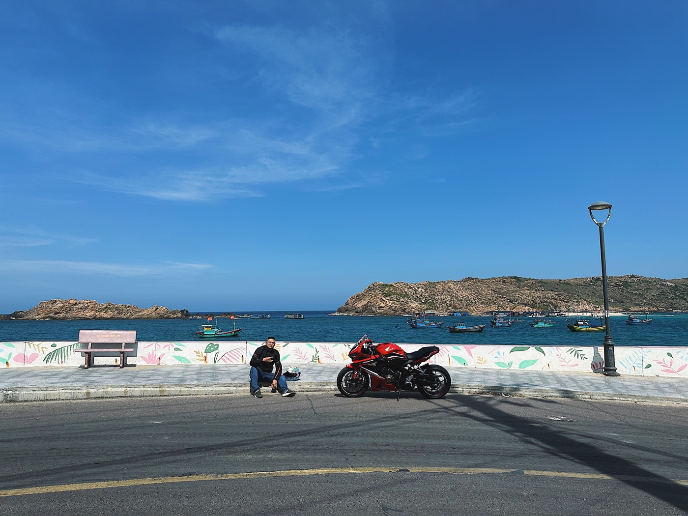

냐짱 바닷가에서 오토바이 관리하는 법

바다는 주행을 더 아름답게 하지만, 짠 공기와 습기와 모래는 볼트와 전기 접점의 부식을 앞당깁니다. 냐짱의 오토바이에 매일 꼼꼼한 세차는 필요 없습니다 — 오염을 정기적으로 씻어내고, 말리고, 첫 변화를 빨리 알아채는 것이 더 중요합니다.
문제가 생기는 곳
먼저 볼트, 발판, 스프링, 브레이크 디스크 가장자리, 배기 연결부, 도장이 벗겨진 곳을 살펴보세요. 시트 아래와 수납함에는 생각보다 습기가 오래 남습니다. 접점의 흰색·녹색 가루, 주황색 녹 점, 뻑뻑한 경첩은 정비를 미루지 말라는 신호입니다.
비 온 뒤, 젖은 길을 달린 뒤
오토바이가 식으면 민물로 바퀴, 하단 외장, 발판의 흙과 소금기를 씻어내세요. 키 박스, 계기판, 흡기구, 전기 장치, 베어링, 배기구에 강한 물줄기를 직접 쏘지 마세요. 세차 후 닿는 면을 닦고 통풍되는 곳에서 말리세요.
주차 요령
해변 바로 앞에 늘 세워두면 소금기 섞인 물보라를 더 많이 맞습니다. 선택할 수 있다면 지붕 아래, 하지만 바람이 통하고 물보라가 직접 닿지 않는 곳에 세우세요. 커버는 마르고 통기성이 있어야 합니다. 젖은 스쿠터를 꽉 덮으면 결로가 갇혀 부식에 최적의 조건이 됩니다.
외장, 금속, 시트
- 부드러운 스펀지와 오토바이용 세정제를 쓰세요;
- 마른 천으로 모래를 문지르지 마세요 — 흠집이 납니다;
- 타이어, 브레이크, 그립, 시트에 미끄러운 제품을 바르지 마세요;
- 금속 부품의 도장 벗겨짐은 정비사에게 보여주세요;
- 세차 후 저속에서 브레이크를 확인하세요.
금속과 접점용 보호제는 용도에 맞게 필요한 곳에만 씁니다. 브레이크 디스크 근처의 다용도 스프레이 윤활제는 위험합니다: 조금만 묻어도 제동력이 떨어집니다.
전기 장치와 잠금장치
비 온 뒤 키가 잘 안 돌아가거나, 경적이 불안정하거나, 방향지시등이 이상하게 깜빡이면 아무 데나 기름을 붓지 마세요. 먼저 오토바이를 말리고 커넥터와 실링 점검을 요청하세요. 접점용 제품은 소재와 사용 위치에 맞게 고릅니다.
주간 간단 점검
- 타이어와 제동면을 확인한다.
- 볼트, 발판, 배기구를 본다.
- 수납함을 열고 습기를 제거한다.
- 라이트, 경적, 양쪽 방향지시등을 확인한다.
- 새 녹 점이 커지지 않는지 본다.
정비소가 필요할 때
브레이크, 바퀴 고정부, 핸들, 프레임, 배선에 부식이 생겼거나, 세차 후 엔진이 다르게 돌거나, 커넥터가 뜨거워지거나 라이트가 나가면 정비사에게 가세요. 외관상의 가루와 하중을 받는 부품의 문제는 다른 일이므로 전문가의 판단이 중요합니다.
짧은 결론
해양성 기후에서는 간단한 방법이 통합니다: 심하게 더러워지면 민물 세척, 꼼꼼한 건조, 통풍되는 주차, 정기 점검. 전체 정비 일정은 오토바이 관리법을, 매번 출발 전에는 짧은 체크리스트를 활용하세요.